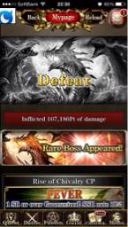

PARTICIPANTS:
DB ID: 0
Current name: You
Address book name: You
User name:
Phone Number:
Key:
DB ID: 420
Current name: 竜樹 Crooz
Address book name: None
User name: たっちゃん
Phone Number:
Key:
Messages:
2013/09/30 10:14:57, "0:You":
I didn't want to wake you up.
Fixed the stamp login bonus by 2am
And tested in production environment until 28th
2013/09/30 10:15:05, "0:You":
You sent a photo.
2013/09/30 11:25:53, "420:竜樹 Crooz":
Oh thanks.
2013/09/30 21:35:33, "420:竜樹 Crooz":
Don't know what's gonna happen but I really wanna go to Europe!!!!!!!!
Please pray for me. Lol.
2013/09/30 21:36:07, "0:You":
Sure!
That's big!
2013/09/30 21:44:08, "420:竜樹 Crooz":
Hell yeah!!!
I can go any time man!!
2013/09/30 21:47:43, "0:You":
You deserve it
2013/09/30 21:48:26, "420:竜樹 Crooz":
Thanks man. Btw, did you bring back your pc today?
2013/09/30 21:48:27, "0:You":
People saw how passionate you are at work
2013/09/30 21:48:40, "0:You":
No
2013/09/30 21:48:56, "0:You":
I just need the VPN
2013/09/30 21:49:17, "420:竜樹 Crooz":
There were more people who had an interview with the CEO of crooz Europe.
2013/09/30 21:49:48, "420:竜樹 Crooz":
Event bannerの文言がおかしい
2013/09/30 21:50:04, "0:You":
Oh?!
2013/09/30 21:51:13, "0:You":
The English is correct
2013/09/30 21:52:08, "420:竜樹 Crooz":
バナー下。 it says more reward added!!後半とかで出す文言w
2013/09/30 21:55:29, "0:You":
Now you say it.
Seems little extrange
2013/10/02 15:34:53, "420:竜樹 Crooz":
None
2013/10/02 15:35:25, "0:You":
Call History : 0 millisecs, Result: 16
2013/10/02 15:36:07, "0:You":
Something happened?
2013/10/08 13:17:24, "420:竜樹 Crooz":
Did you go to lunch?
2013/10/08 13:21:00, "0:You":
すき家なう
2013/10/08 13:21:23, "0:You":
Did it got fixed?
2013/10/08 13:29:58, "420:竜樹 Crooz":
Yeah. It was flashers' fault.
2013/10/08 13:32:48, "0:You":
Good!
Just on time
2013/10/11 21:45:05, "0:You":
this one?
2013/10/11 21:45:07, "0:You":
project/umragnarok/webapps/mobile/htdocs/swf/gacha/fight/4/encount/newbossExg.swf
2013/10/11 21:45:19, "0:You":
or this?
2013/10/11 21:45:26, "0:You":
project/umragnarok/webapps/mobile/htdocs/swf/gacha/fight/4/appear/1562_Exg.swf
2013/10/11 21:46:24, "420:竜樹 Crooz":
It's one of those and the revised one should be in dev. But you have to check if it's right or not.
2013/10/11 21:46:46, "420:竜樹 Crooz":
Can't access to my rooter so just a minute.
2013/10/11 21:49:38, "0:You":
You sent a photo.
2013/10/11 21:49:40, "0:You":
You sent a photo.
2013/10/11 22:31:47, "0:You":
Rare boss appearedって出てるけとフラッシュは流れない
2013/10/11 22:31:55, "0:You":
You sent a photo.
2013/10/11 22:32:20, "420:竜樹 Crooz":
Rare bossじゃなくてsuper rare boss.
2013/10/11 23:33:40, "420:竜樹 Crooz":
Thanks for now man. Let's find out what's wrong on Tuesday.
2013/10/11 23:34:24, "0:You":
OK
Good night
2013/10/16 15:58:28, "420:竜樹 Crooz":
お先でした！丸山さんとランチ楽しんで
2013/10/21 17:38:30, "420:竜樹 Crooz":
Where are you?
2013/10/21 17:41:09, "0:You":
Toilet
2013/10/22 14:34:48, "420:竜樹 Crooz":
I'm gonna go to step roppongi so I'll be back
In few minutes.
2013/10/22 14:36:43, "0:You":
Yeah!
Kiss Endo for me, please
2013/10/22 15:07:40, "420:竜樹 Crooz":
Man. She was too busy man.
2013/10/22 15:08:58, "0:You":
Not asking for a French kiss.
A quick kiss in the cheek will do
2013/10/22 15:11:20, "420:竜樹 Crooz":
Yeah yeah yeah. In front of the director? You nuts man?
2013/10/27 13:01:22, "420:竜樹 Crooz":
None
2013/10/29 17:28:01, "420:竜樹 Crooz":
Where are you at?
2013/10/29 17:51:34, "0:You":
Cafeteria doing Unity3d
2013/10/30 19:25:21, "0:You":
Don't like to drink with the girls.
But we have no choice, they're workmates
2013/10/30 19:27:20, "420:竜樹 Crooz":
You guys should go man. I might not come back. Lol. From what time are we starting?
2013/10/30 19:27:47, "0:You":
8:00
2013/10/30 20:24:10, "420:竜樹 Crooz":
Enjoy.
2013/11/16 22:16:40, "0:You":
[LINE Maple Village]
Come play with us at LINE Maple Village!
(Binary)
2014/02/03 14:25:33, "420:竜樹 Crooz":
Hey man. I'll go to the office in like an hour.
2014/02/03 14:32:12, "0:You":
Now?!
Nice!
2014/02/03 14:32:31, "420:竜樹 Crooz":
Yeah.
2014/02/03 15:15:55, "420:竜樹 Crooz":
I'm outside chilling right now. I'll go there at around 3:30.
2014/02/03 15:16:03, "420:竜樹 Crooz":
Where do you sit?
2014/02/03 15:16:42, "0:You":
You sent a photo.
2014/02/03 15:16:54, "0:You":
Next to the gorila
2014/02/03 15:22:01, "420:竜樹 Crooz":
Oh, got it.
2014/02/07 21:58:22, "420:竜樹 Crooz":
None
2014/04/08 20:05:47, "420:竜樹 Crooz":
I've heard that you are quitting but is it true?
2014/04/08 20:06:25, "0:You":
Yes
2014/04/08 20:07:25, "420:竜樹 Crooz":
When are you quitting?
2014/04/08 20:08:03, "0:You":
I'm working at Ikebukuro now.
Just started this week in the new place
2014/04/08 20:08:45, "420:竜樹 Crooz":
Oh. I see. What are you doing right now? I'm back in japan you know.
2014/04/08 20:10:08, "0:You":
Really?!
I'm CTO at a small game company.
We develop games for customers.
2014/04/08 20:10:50, "0:You":
How are you doing? Still crazy busy?
2014/04/08 20:14:49, "420:竜樹 Crooz":
Nice. I got sick and came back to japan. I'm at my hometown taking rest right now. I'll go back to Tokyo and will have meeting with HR tomorrow. I might quit you know.
2014/04/08 20:15:27, "0:You":
Oops
Too much stress?
2014/04/08 20:17:32, "420:竜樹 Crooz":
Yeah. I got better though. I'm surprised that my brother is programming. Lol.
2014/04/08 20:18:20, "420:竜樹 Crooz":
They told me that I might go back as a part time job because of my ability.
2014/04/08 20:18:34, "0:You":
Hey!
You'll end up programming as well...lol
2014/04/08 20:19:57, "0:You":
In IT everybody changes jobs very fast.
Too manny companies to choose
2014/04/08 20:20:39, "420:竜樹 Crooz":
Yeah. I'm learning java script first from my brother right now. Lol. He told me it's easy to make a game first. He told me to learn c# when I want to make quality games. Is that true?
2014/04/08 20:21:19, "420:竜樹 Crooz":
You are outsourcing the games to client?
2014/04/08 20:22:03, "0:You":
Yes
...now you're good to use Unity3D with your JavaScript.
Yes, to bigger companies
2014/04/08 20:23:30, "0:You":
I'm trying to get some outsourcing job from Crooz.
Don't know if they need.
2014/04/08 20:24:02, "0:You":
All the decent programmers are quitting so fast.
2014/04/08 20:24:06, "420:竜樹 Crooz":
He told me the same thing man. Lol.
2014/04/08 20:25:20, "420:竜樹 Crooz":
Oh well, I'll learn the programming by myself though. I'll let you know what happens tomorrow.
2014/04/08 20:26:05, "0:You":
I learn reading code, is faster than the books
2014/04/08 20:27:09, "420:竜樹 Crooz":
Yeah. I'll first learn the basics and then I'll ask my brother to give me the code. You told me that too before so I remember man.
2014/04/09 18:44:05, "420:竜樹 Crooz":
I'm staying man.
2014/04/09 18:45:10, "0:You":
Nice!
You're doing very well now
2014/04/09 18:45:38, "420:竜樹 Crooz":
As a full time!!
2014/04/09 19:05:35, "0:You":
Congrats!
2014/08/17 15:50:22, "420:竜樹 Crooz":
2014/08/17 15:51:12, "420:竜樹 Crooz":
2014/08/17 15:51:56, "0:You":
Call History : 12000 millisecs, Result: 16
(Binary)
2014/09/30 23:12:19, "420:竜樹 Crooz":
Remember to ask mike about localizing job.
2014/09/30 23:13:01, "0:You":
toni.vaquer@gmail.com
2014/10/01 14:58:14, "420:竜樹 Crooz":
I know it's too fast to ask but I just wanted to remind you about localizing job. Did you get to ask mike about it?
2014/10/01 14:59:50, "0:You":
OK
2014/10/01 17:18:57, "420:竜樹 Crooz":
Thanks. I wanna get the fuck outta here ASAP.
2014/10/01 20:11:24, "0:You":
I gotta talk directly to the boss tomorrow.
It might be a better chance as a planner/game designer
2014/10/01 22:01:07, "420:竜樹 Crooz":
Really? No more spot for translator?
2014/10/01 22:12:09, "0:You":
They prefer a バイト for translating.
I also can make an arrangement, so you can work from home, so you can continue working at Crooz and get extra money
2014/10/01 22:13:24, "0:You":
Other option is to be a full time game designer.
2014/10/01 23:18:37, "420:竜樹 Crooz":
How much is for バイト？ since I only have experience in translating Diety Wars, I don't mind working as a バイト.
As for game designer, I don't think I have skills for that.
2014/10/11 23:44:13, "420:竜樹 Crooz":
Yo. Any updates?